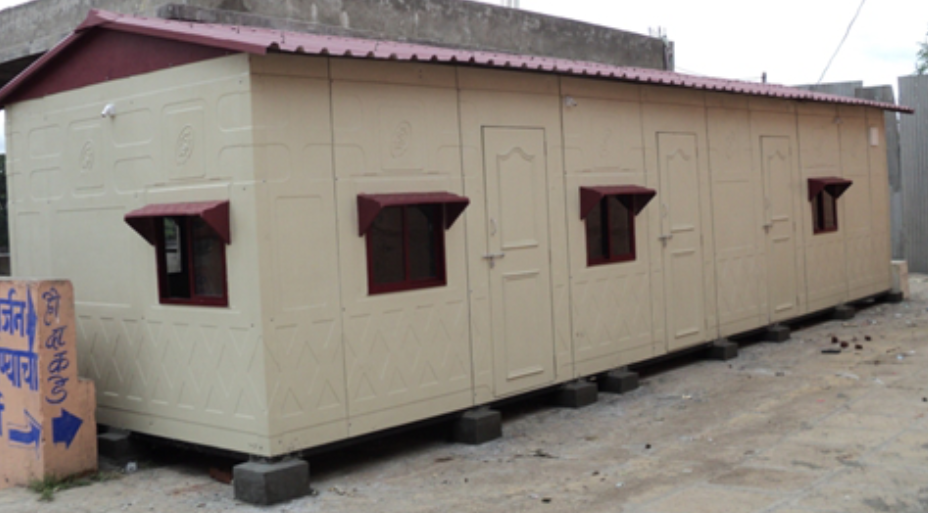
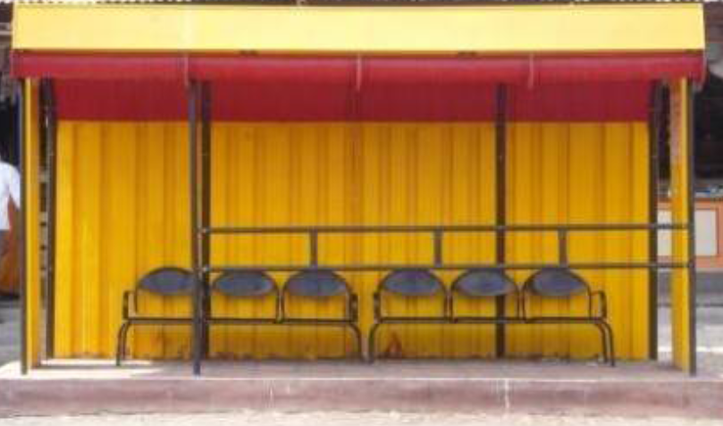
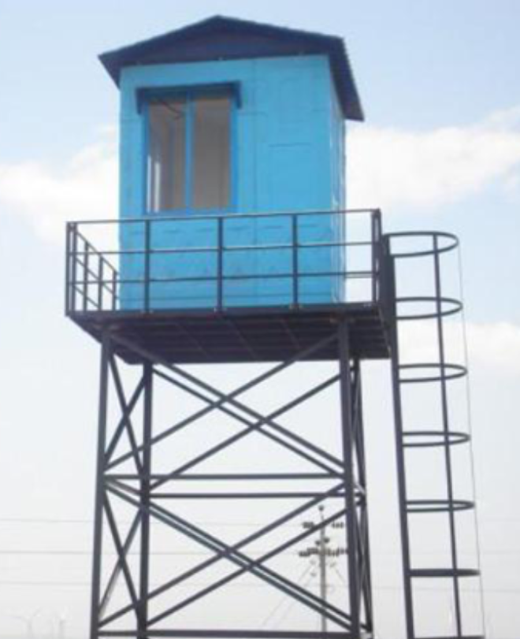
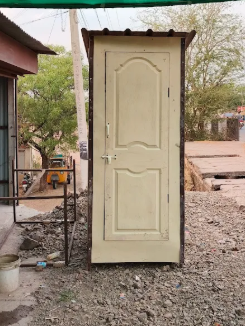
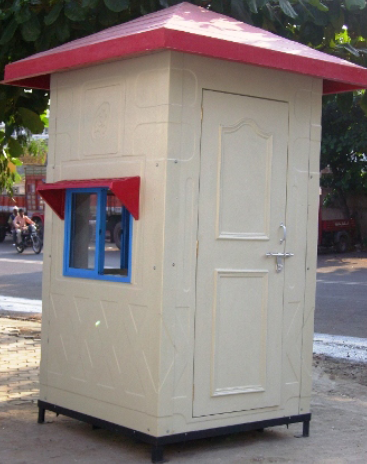
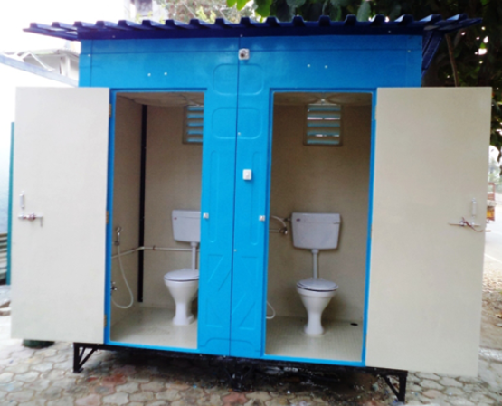
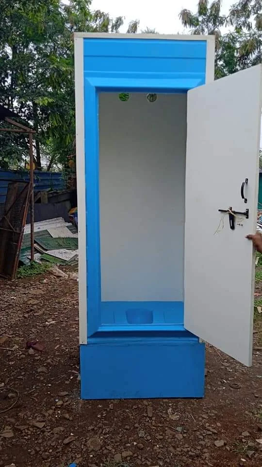

FRP Construction Industry
At Sifan Fibrotech, we provide high-quality FRP products for the construction industry, designed to offer strength, durability, and long-term reliability. Fiber Reinforced Plastic (FRP) has become an important material in modern construction because of its lightweight structure, corrosion resistance, and high durability. Compared to traditional materials like steel or wood, FRP products are easier to install, require less maintenance, and perform well even in harsh environments.
In many industrial and commercial projects, FRP materials are used to create strong structural components, protective enclosures, and modular structures that can withstand environmental stress while maintaining a clean and professional appearance. These qualities make FRP an excellent solution for factories, warehouses, construction sites, and infrastructure projects.
Key Features of FRP Construction Products
Our FRP construction components are designed to provide both structural strength and long service life. Some important advantages include:
- Lightweight and Strong: Easy to transport and install while maintaining excellent structural support.
- Corrosion Resistant: Ideal for environments where moisture, chemicals, or harsh weather conditions are present.
- Weather and UV Resistant: Suitable for outdoor applications without damage from sunlight or rain.
- Low Maintenance: Requires minimal maintenance compared to metal or wooden structures.
- Long-Lasting Performance: Durable materials ensure reliable use for many years.
Industrial Cabins and Modular Structures
One of the important applications of FRP in the construction industry is the manufacturing of industrial cabins and modular enclosures. These cabins are commonly used in factories, construction sites, and industrial areas for various operational purposes.
FRP cabins are widely used as:
- Security cabins and guard rooms
- Site offices at construction projects
- Control rooms in factories
- Portable cabins for industrial facilities
- Operator cabins for machinery areas
These cabins are preferred because FRP structures are lightweight, easy to install, weather-resistant, and durable, making them perfect for industrial environments. They also provide a clean and professional appearance while offering strong protection from heat, rain, and corrosion.
Applications in Construction and Industrial Projects
FRP construction products can be used in many different environments, including:
- Industrial cabins and portable structures
- Wall panels and building cladding
- Protective covers for equipment
- Factory partitions and enclosures
- Structural components for industrial buildings
These products help improve efficiency, durability, and safety in modern construction and industrial projects.
With increasing demand for durable and low-maintenance materials, FRP has become an ideal choice for construction and industrial infrastructure. At Sifan Fibrotech, we focus on delivering high-quality FRP products that support efficient building solutions, industrial cabins, and long-lasting structural components.







Contact Us
Get In Touch
We are available for consultations and project quotes. Visit our facility or contact us directly.
Sifan Fibrotech,
Babaleshwar, Vijayapura, Karnataka 586113,
+91 9900645310 | +91 9623833304
sifanfibrotechbbl@gmail.com